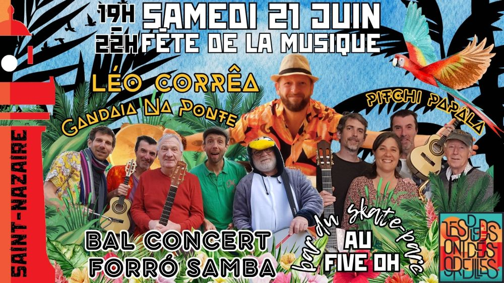

Les podos font la Fête de la musique

Le samedi 21 juin, Saint-Nazaire se transforme en une scène musicale de plein air pour la Fête de la Musique. 🎶
Ne manquez pas le concert-bal Forró et Samba de Gandaia Na Ponte et Pitchi Pala Pala.
Enfilez vos chaussures et échauffez vos gambettes pour une soirée de rythmes endiablés. Rejoignez-nous, nombreux/nombreuses, pour célébrer la musique et la danse dans une ambiance chaleureuse et festive ! 🎉
Début de la soirée 19h ⏰
Fin 22h 🌜
Bar du skate parc Le Five Oh. 🍹
Vidéos
Les vidéos sont hébergées par YouTube. Elles ne se chargent, et YouTube n'est contacté, qu'au moment où vous cliquez sur lecture.